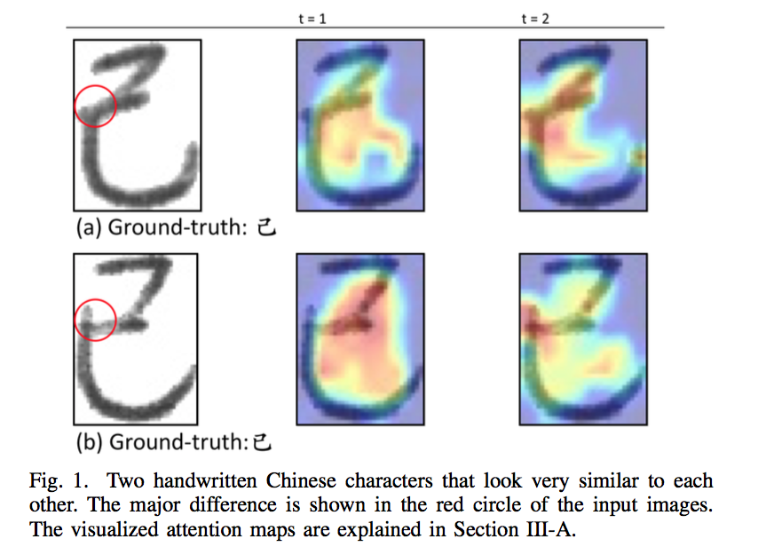
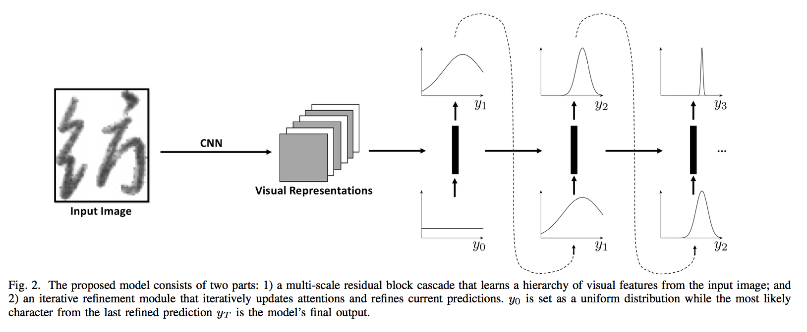

Improving Offline Handwritten Chinese Character Recognition by Iterative Refinement |
||||||||||||||||||||||||||||||||||||||||||||||||||||||||||||||||||||||||||||||||||||||||||||||||||
|
 |
Abstract
We present an \textit{iterative refinement module} that can be applied to the output feature maps of any existing convolutional neural networks in order to further improve classification accuracy. The proposed module, implemented by an attention-based recurrent neural network, can iteratively use its previous predictions to update attention and thereafter refine current predictions. In this way, the model is able to focus on a sub-region of input images to distinguish visually similar characters (see Figure~\ref{fig:example} for an example). We evaluate its effectiveness on handwritten Chinese character recognition (HCCR) task and observe significant performance gain. HCCR task is challenging due to large number of classes and small differences between certain characters. To overcome these difficulties, we further propose a novel convolutional architecture that utilizes both low-level visual cues and high-level structural information. Together with the proposed iterative refinement module, our approach achieves an accuracy of 97.37\%, outperforming previous methods that use raw images as input on ICDAR-2013 datase. | |
Network Architecture
 | |
Paper
Improving Offline Handwritten Chinese Character Recognition by Iterative Refinement (link) | |
Supplementary Material | |
Acknowledgement We gratefully acknowledge partial support from NSF grant CCF 1317560 and a hardware grant from NVIDIA. |